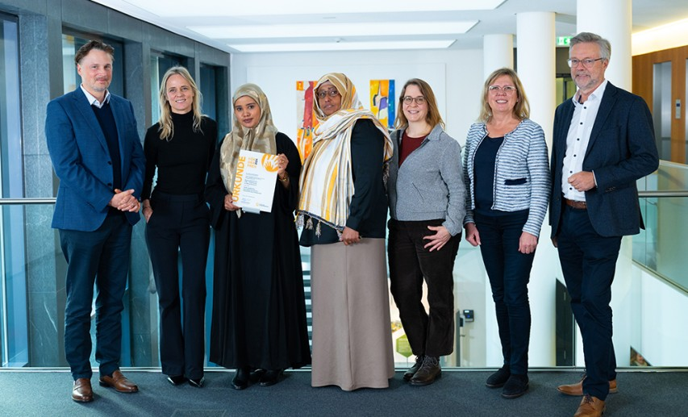

Begegnung
Beim gemeinsamen Frühstück im Frauencafé sprachen Frauen über Schule, Gesundheit und Behördengänge. Als das Treffen während der Pandemie ausfiel, organisierte und leitete Abdulle ein Bewegungsangebot im Anne-Frank-Jugendhaus.
2016 wurde ihr Engagement bei der regionalen Verleihung des Deutschen Bürgerpreises gewürdigt.
